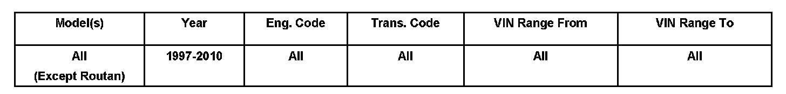

Vehicle - Certification Label/VIN Plate Ordering
00 08 05Aug. 18, 2008
2015460 Supersedes T.B. Group 00 number 07 08 dated July 26, 2007 due to removal of Routan applicability.

Vehicle Information
Condition
Vehicle Identification Number (VIN) Plates, Safety Certification Labels, Ordering Procedures
VIN plate and/or Safety Certification (B-Pillar) Label requires replacement.
Technical Background
Not applicable.
Production Solution
No production change required.
Service

VIN plate.

When a new VIN plate -above- or Safety Certification (B-Pillar) Label -arrow- is required:
^ Save original VIN plate and/or Safety Certification Label that was removed from vehicle until new VIN plate and/or Safety Certification Label arrives.
^ Use Affidavit to request a replacement VIN plate and/or Safety Certification Label.
^ Information from original VIN plate and/or Safety Certification Label will be required to complete the Affidavit.

^ Provide the completed Affidavit to your Fixed Operations Manager (FOM).
^ Replacement VIN plate and/or Safety Certification Label will be shipped from the factory to the FOM for delivery to the dealer.
Warranty
Information only.
Required Parts and Tools
Parts are vehicle specific.
For Special Tools see Repair Manual.
Additional Information
All part and service references provided in this Technical Bulletin are subject to change and/or removal.
Always check with your Parts Dept. and Repair Manuals for the latest information.